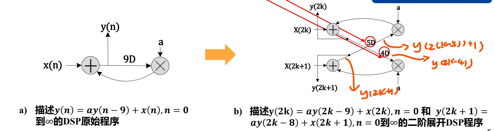
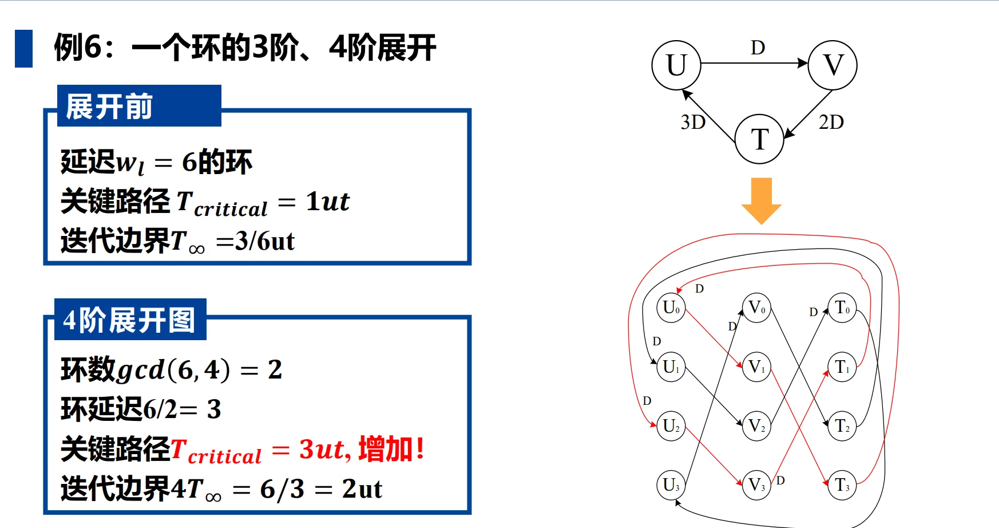
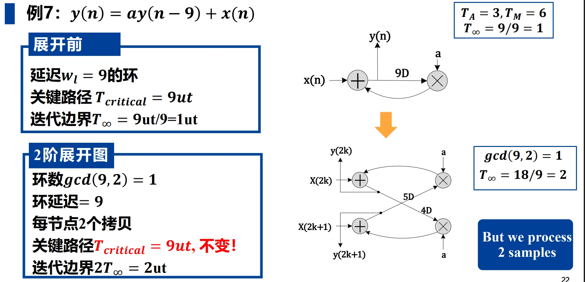
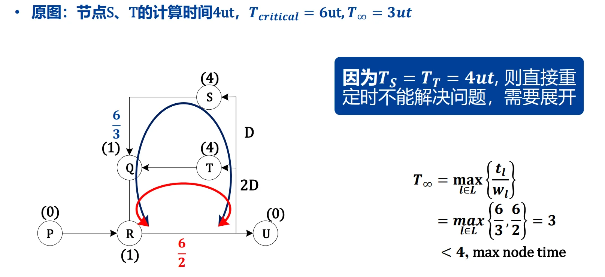
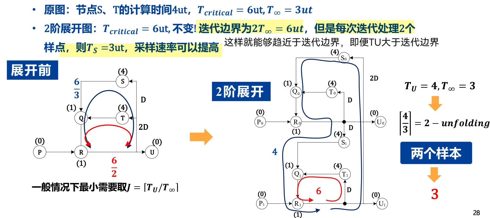
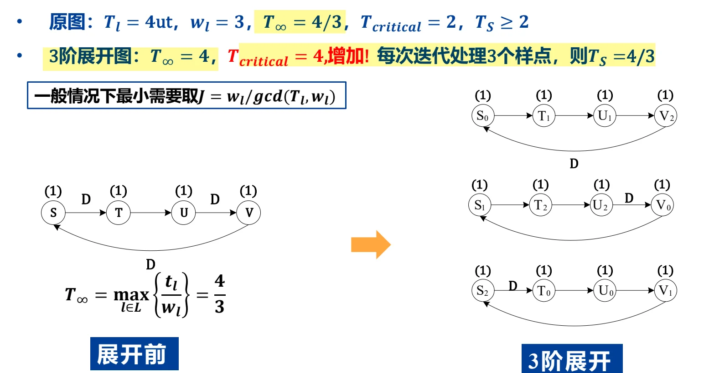

第六章：展开 (Unfolding)
一、展开的定义与本质
- 定义：展开是一种架构转换技术，它通过创建一个描述原程序多次连续迭代的新程序，来实现算法的并行处理。
- 本质：展开等同于计算机编译理论或汇编编程中的循环展开（Loop Unrolling）。
- 展开因子 (\(J\))：表示展开的迭代次数或阶数。一个 \(J\) 阶展开系统会同时处理 \(J\) 个连续的采样点。
- 核心意义：展开 \(\equiv\) 并行处理。它是发掘算法潜在并发性、提升系统吞吐率的结构化方式。
可以理解展开技术就是并行处理的结构化方式。
例如我们对如下 DSP 系统进行2阶展开：
$\(\begin{aligned}& y(n) = ay(n-9) + x(n) \Rightarrow \\
& y(2k) = ay(2k-9) + x(2k) = ay(2(k-5) + 1) + x(2k) \\
& y(2k+1) = ay(2k+1-9) + x(2k+1) = ay(2(k-4)) + x(2k+1)\end{aligned}\)$
\end{aligned}$$

二、展开图 (DFG) 的构建算法
构建一个 \(J\) 阶展开的数据流图（DFG）遵循以下规则：
2.1 节点映射
- 对于原始 DFG 中的每一个节点 \(U\)，在展开图中绘制 \(J\) 个具有相同功能的节点：\(U_0, U_1, \dots, U_{J-1}\)。
- 结果：展开后的 DFG 包含的节点数量是原始 DFG 的 \(J\) 倍。
2.2 边与延迟映射
对于原始 DFG 中一条从 \(U\) 到 \(V\)、延迟为 \(w\) 的边，在 \(J\) 阶展开图中对应生成 \(J\) 条边：
* 连接关系：节点 \(U_i\) 连接到节点 \(V_{(i+w) \% J}\)。
* 延迟计算：新边上的延迟数为 \(w_{unf} = \lfloor (i+w) / J \rfloor\)。
* 注：\(\lfloor x \rfloor\) 表示向下取整；\(\%\) 表示取余数。
2.3 特殊情况：当 \(w < J\) 时
- 若原始边的延迟 \(w\) 小于展开因子 \(J\)，展开后会生成：
- \(J - w\) 条无延迟的边。
- \(w\) 条延迟为 1 的边。
这份笔记整理得非常清晰！基于你提供的PDF课件，我为你继续整理了下一部分的核心内容。
这一部分我们主要聚焦于课件的“02. 展开的性质”（对应课件第16页至第25页）。这部分是理解展开算法如何影响电路性能（如延迟、关键路径、迭代边界等）的理论核心。
你可以直接将以下内容追加到你的 unfolding.md 文件中：
三、展开的性质 (Properties of Unfolding)
展开不仅是一种简单的复制过程，它在改变系统结构的同时，遵循着一系列严格的数学和图论性质。
3.1 保留原图中的优先约束 (Precedence Constraints)
- 性质：展开后的 DFG 会严格保留原 DFG 中节点计算的先后依赖关系。
- \(J\) 阶展开图中，从 \(U_i \rightarrow V_{(i+w)\%J}\) 的 \(J\) 条边（延迟为 \(\lfloor \frac{i+w}{J} \rfloor\)），完美对应并等效于原始 DFG 中延迟为 \(w\) 的边 \(U \rightarrow V\)。
3.2 保持各边的总延迟数 (Preserving Delays)
- 性质：对于原 DFG 中一条延迟为 \(w\) 的边，其在 \(J\) 阶展开图中生成的 \(J\) 条对应边的延迟数之和，等于原始延迟 \(w\)。
- 数学公式：
$$ \lfloor \frac{w}{J} \rfloor + \lfloor \frac{w+1}{J} \rfloor + \dots + \lfloor \frac{w+J-1}{J} \rfloor = w $$
3.3 对关键路径的影响 (Impact on Critical Path)
展开操作可能会改变电路的关键路径（\(T_{critical}\)），这取决于原边上的延迟 \(w\) 与展开因子 \(J\) 的大小关系：
* 当 \(w < J\) 时：
* 会在展开图中生成 \(J-w\) 条无延迟的边（0 delay）和 \(w\) 条延迟为 1 的边。
* 风险：无延迟边的增加，意味着节点之间形成了直接的组合逻辑连接，可能导致关键路径变长。
* 当 \(w \ge J\) 时：
* 生成的 \(J\) 条边的延迟均 \(\ge 1\)，不会生成无延迟边。
* 结论：因此，必定不会因为这条边而增加系统的关键路径。
3.4 展开环路的规则 (Rules for Unfolding Loops)
若原 DFG 中存在一个延迟数为 \(w_l\) 的环路 \(l\)，在进行 \(J\) 阶展开后（记为 \(G_J\)），该环路会发生如下形变：
* 环路数量：原先的 1 个环路，会分裂成 \(\gcd(w_l, J)\) 个独立的环路。
* 环路延迟：每个新环路中包含的延迟数为 \(w_l / \gcd(w_l, J)\)。
* 节点拷贝数：每个新环路包含了原环路中每个节点的 \(J / \gcd(w_l, J)\) 个拷贝。
3.5 展开对迭代边界的影响 (Impact on Iteration Bound)
- 性质：如果原图 \(G\) 的迭代边界为 \(T_\infty\)，那么其 \(J\) 阶展开图 \(G_J\) 的迭代边界为 \(J \cdot T_\infty\)。
- 公式推导：
$$ T_{\infty}' = \max_l \left{ \frac{(J/\gcd(w_l, J)) t_l}{w_l/\gcd(w_l, J)} \right} = J \max_l \left{ \frac{t_l}{w_l} \right} = J T_\infty $$ - 物理意义理解：虽然展开后图的绝对迭代边界变成了原来的 \(J\) 倍（\(J T_\infty\)），但是由于展开后的系统在一次时钟迭代中同时处理了 \(J\) 个采样点，因此分摊到每个采样点的有效迭代周期依然是 \(T_\infty\)。这为我们后续通过重定时等技术逼近真正的迭代边界提供了物理空间。
3.6 一些案例


四、展开的应用 (Applications of Unfolding)
展开技术在数字信号处理（DSP）架构设计中有两大核心应用：一是突破重定时的瓶颈以减少采样周期；二是构建字级或位级的并行处理架构。
4.1 应用一：减少采样周期 (向迭代边界 \(T_\infty\) 逼近)
在实际电路优化中，为了让系统的采样周期 \(T_S\) 达到理论的极限（即迭代边界 \(T_\infty\)），我们经常会遇到单纯使用“重定时(Retiming)”无法解决的困境。此时必须引入“展开”。具体分为以下三种情况：
情况1：原始DFG中存在计算时间 \(T_U > T_\infty\) 的节点
痛点：由于某个不可分割的单节点计算时间过长（如某乘法器耗时4ut，但整个环路的 \(T_\infty=3ut\)），重定时无法拆分单个节点，导致系统关键路径 \(T_{critical}\) 始终受制于该节点，无法达到 \(T_\infty\)。例如：

解决方案：对 DFG 进行 \(J\) 阶展开。我们可以强行是的迭代边界变为原来的 \(J\) 倍从而使得：\(JT_{\infty}>T_U\)，虽然这听起来有点“硬凑”的感觉，但是别忘了我们的采样频率可以提高！

效果：虽然展开后图的关键路径 \(T_{critical}\) 可能不变（甚至更长），但由于一次时钟迭代同时处理了 \(J\) 个样点，平均每个样点的有效采样周期 \(T_S = T_{critical} / J\) 会降低，从而突破节点耗时的物理限制。
参数选择：一般情况下，最小需要的展开因子为：
$$ J = \lceil T_U / T_\infty \rceil $$
即向上取整，保证展开后的整体迭代周期能够包容该长耗时节点
情况2：迭代边界 \(T_\infty\) 不是整数
痛点：在数字电路中，时钟周期必须是基本时间单位（ut）的整数倍。如果计算出的 \(T_\infty\) 带有小数（例如 \(T_\infty = 4/3\) ut），在不改变架构的情况下，实际时钟周期只能向上取整（取 2ut），损失了性能。

!!! note 原因：因为向上取整中的空闲时间无法被利用。
解决方案：通过展开，使展开后的迭代边界 \(J \cdot T_\infty\) 成为整数。
参数选择：若决定迭代边界的环路延迟为 \(w_l\)，计算时间为 \(t_l\)，则最小展开因子通常取：
$$ J = \frac{w_l}{\gcd(t_l, w_l)} $$
通俗理解：即求出能让 \(J \cdot T_\infty\) 变成整数的最小整数 \(J\)
情况3：情况1与情况2的混合
- 特征：最长的节点计算时间大于迭代边界（\(T_U > T_\infty\)），且 \(T_\infty\) 也不是整数。
- 参数选择：需要寻找一个满足以下两个条件的最小整数 \(J\)：
- \(J \cdot T_\infty\) 必须为整数（解决非整数边界问题）。
- \(J \cdot T_\infty \ge \max(T_U)\)（解决单节点耗时过长问题）。
- 示例：假设 \(T_\infty = 4/3\)，且最大节点耗时 \(T_U > 6\)。
- 满足条件1的 \(J\) 值有：\(3, 6, 9 \dots\)
- 代入条件2：当 \(J=3\) 时，\(3 \times (4/3) = 4\) 不满足 \(\ge 6\)；当 \(J=6\) 时，\(6 \times (4/3) = 8 \ge 6\) 满足条件。因此最优展开因子 \(J = 6\)。
应用二：并行处理架构的衍生 (Parallel Processing)
展开的物理本质就是复制硬件来换取时间，这直接对应了不同层级的并行计算架构转换。
1. 字级并行 (Word-Level Parallel Processing)
- 对一个串行处理整字（Word）的常规 DSP 滤波程序进行 \(J\) 阶展开，可以直接得到一个字级并行架构（MIMO 结构）。
- 系统在每一个时钟周期内，能够同时吃进 \(J\) 个字的数据，并吐出 \(J\) 个字的计算结果，极大地提升了系统的数据吞吐率。
2. 位级并行 (Bit-Level Parallel Processing)
展开概念同样可以无缝套用到数据字内部的比特位（Bit）处理上：
* 位串行 (Bit-Serial)：每次时钟仅处理 1 个 bit。
* 位并行 (Bit-Parallel)：一次性处理所有的 bit。
* 数字串行 (Digit-Serial)：介于两者之间。如果我们将一个纯“位串行”的架构进行 \(J\) 阶展开，就会得到一个每次处理 \(J\) 个 bit （即一个 Digit，Digit-size = \(J\)）的数字串行架构。
* 应用价值：Digit-Serial 允许设计师在 硬件面积（位串行最小） 与 处理速度（位并行最快） 之间通过调整展开因子 \(J\) 寻找最优的折中点。